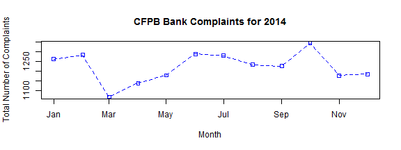

Choose a Bank Assistant
Application Pitch
Author: Anna Korsakova Bain
What is the 'Choose a Bank Assistant'?
- The 'Choose a Bank Assistant' allows users to compare banks by complaints filed to the Consumer Financial Protection Bureau (CFPB)
- The public can file complaints with the CFPB for any bank in the United States
- The 'Choose a Bank Assistant' shows graphical comparisons for all banking related complaints for 2014
What is the CFPB?
- The CFPB is an independent agency of the United States government responsible for consumer protection in the financial sector
- The CFPB writes and enforces rules for financial institutions, examines both bank and non-bank financial institutions, monitors and reports on markets, as well as collects and tracks consumer complaints
- Additional information on the CFPB can be found on Wikipedia
How do you choose a bank?
- Research shows that most people choose a bank based on location convenience, either to the branch or the ATM
- Not many people take the time to look at how many consumers report issues about their bank. Below is the average monthly number of bank related complaints filed with the CFPB in 2014:
#Average Number of Complaints for a Given Month in 2014
round(mean(complaints$totals),0)
## [1] 1223
How will this help me chose a bank?
- With anywhere between 1,100 and 1,300 complaints a month filed with the CFPB relating to banks, shouldn't we all be doing a little bit more research than the nearest ATM location?
plot(complaints$months,complaints$totals,type="o",pch=22, lty=2,col="blue",main="CFPB Bank Complaints for 2014", xlab="Month", ylab="Total Number of Complaints")

See how your banks stacks up here